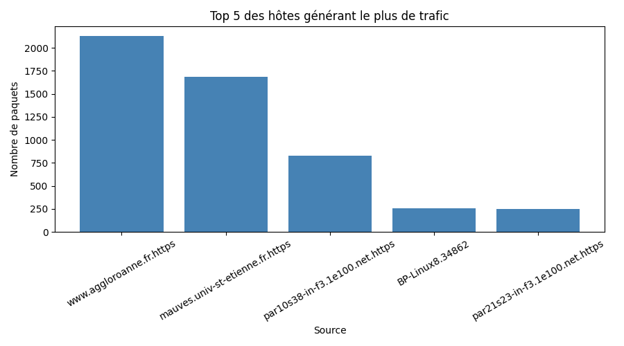

Rapport d'analyse du trafic réseau
Objectif
Analyser une capture réseau afin de détecter des comportements suspects comme les attaques SSH, les scans de ports et le trafic anormal.
Résultats
Activité SSH suspecte
Aucune activité SSH suspecte détectée.
Scan de ports
- ns1.lan.rt.domain : 61 ports testés
Trafic anormal
- par21s04-in-f4.1e100.net.https : 223 paquets envoyés
- BP-Linux8.34862 : 255 paquets envoyés
- par10s38-in-f3.1e100.net.https : 827 paquets envoyés
- par21s23-in-f3.1e100.net.https : 251 paquets envoyés
- par21s17-in-f1.1e100.net.https : 180 paquets envoyés
- BP-Linux8.40678 : 159 paquets envoyés
- mauves.univ-st-etienne.fr.https : 1687 paquets envoyés
- BP-Linux8.40680 : 115 paquets envoyés
- BP-Linux8.40682 : 150 paquets envoyés
- BP-Linux8.40684 : 119 paquets envoyés
- BP-Linux8.53324 : 189 paquets envoyés
- www.aggloroanne.fr.https : 2130 paquets envoyés
- BP-Linux8.53325 : 149 paquets envoyés
- BP-Linux8.53326 : 148 paquets envoyés
- BP-Linux8.53327 : 137 paquets envoyés
- BP-Linux8.53328 : 205 paquets envoyés
- BP-Linux8.53329 : 194 paquets envoyés
Illustration
Le graphique ci-dessous montre les 5 hôtes générant le plus de trafic.

Conclusion
Cette analyse met en évidence plusieurs comportements potentiellement malveillants. Le script peut être amélioré par l'analyse des flags TCP et l'automatisation complète du rapport HTML.